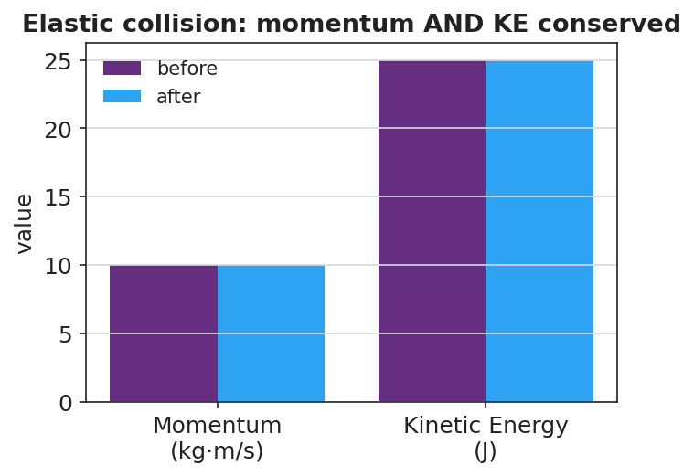
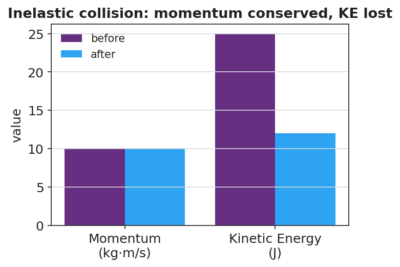
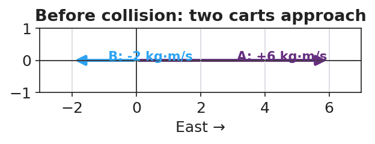

Unit: Momentum & Impulse — Lesson 04: Collisions: Elastic and Inelastic
Phenomenon
A Newton's cradle clicks and the motion passes cleanly through — it keeps bouncing. Two balls of clay are pressed together and stop with a dull thud. Both collisions conserved momentum (you proved that last lesson). But the cradle keeps going and the clay just stops. Where did the clay's motion energy go?
Driving Question
If both collisions conserve momentum, what is different between the bouncy one and the sticky one?
Notice & Wonder
Watch the cradle click and the clay thud. Write two things you notice and two things you wonder.
Initial Model
At your board, draw before/after for the cradle and for the clay. For each, predict: is momentum conserved? Is kinetic energy conserved? Defend your prediction.
Investigate
Toggle between an elastic collision (the carts bounce apart) and a perfectly inelastic one (they stick). Press Collide and watch the bars: total momentum is conserved in both, but kinetic energy (KE = ½mv²) only stays the same in the elastic case. A 2 kg cart at 4 m/s strikes a 2 kg cart at rest.
Total momentum: before = 8.0 kg·m/s · after = — kg·m/s
Kinetic energy: before = 16.0 J · after = — J
Elastic — both conserved; inelastic — momentum conserved but kinetic energy lost:



Make It Make Sense
- Two balls of clay collide and stick. Momentum is conserved but kinetic energy is not. Where did the missing kinetic energy go?
- A car crash where the bumpers lock together is which type of collision? Justify.
- Why is an inelastic crumple zone safer for passengers than a perfectly elastic bumper that bounces back? (Hint: energy absorbed and contact time.)
Stuck? Sentence frame
"This collision is ___ because the kinetic energy ___ conserved, but the momentum ___ conserved."
Key Vocabulary (max 3)
- elastic collision — a collision in which kinetic energy is conserved (e.g. a Newton's cradle); momentum is conserved too
- inelastic collision — a collision in which kinetic energy is not conserved (some becomes heat/sound/deformation); momentum is still conserved. Perfectly inelastic = objects stick together
- kinetic energy — the energy of motion, KE = ½mv²; the quantity that distinguishes elastic from inelastic collisions
Revise Your Model
Return to your before/after drawings. Label each collision elastic or inelastic, annotate where any lost kinetic energy went, and confirm with numbers that momentum is conserved in both.
Return to the Phenomenon
In one sentence, explain why the clay "thud" and the cradle "click" both conserve momentum but only one conserves kinetic energy.
Exit Ticket + Closing Reflection
- A 2 kg ball moving at 4 m/s strikes a 2 kg ball at rest. They stick and move off together.
(a) Find their combined velocity using conservation of momentum. (b) Compute the kinetic energy before and after — is KE conserved? (c) Is this collision elastic or inelastic? Justify with your numbers, and name where the missing energy went. - Reflection: What idea got clearer for you when you saw it written on the board by your group instead of in a notebook?
Explore Further
- PhET Collision Lab — slide elasticity 100% → 0% and watch the KE bar drop while momentum stays fixed
- Javalab — Elastic and Inelastic Collision
- Newton's cradle in slow motion